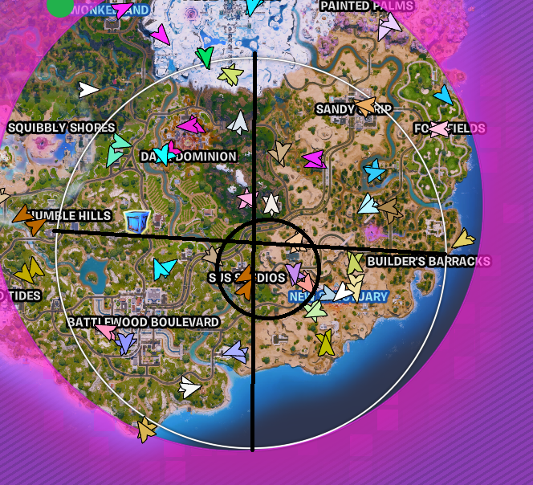

Main Strategy & Mechanics
🧠 IGL Concepts
Positioning > Kills
If you remember ONE thing, make it this.
Don’t chase kills if it ruins rotation.
Don’t fight when zone is moving.
Get front side early.
Positioning wins games.
Think Before You Fight
Do we need this fight?
Will it mess up rotate?
Is it free or risky?
Play brain, not ego.
Always Be Ahead of Zone
Rotate early.
Use teams as cover.
Avoid open space.
If you're not ahead, you're behind.
Play Deadside
Avoid crowded zones.
Rotate through empty space.
More control, less damage.
Endgame Focus
Stay alive.
Get safe refreshes.
Only fight for mats or position.
🎯 Peterbot Fighting Style
Make people panic, then punish them
Tap their wall a couple times (pickaxe). Stop and wait. Most players panic-edit → you shoot them for free. Idea: don’t rush. Make them make mistakes.
Wait for the edit, don’t guess
Bad players spam edits. Good players wait. When they finally edit → you hit them hard first. Idea: patience = free damage.
Always shoot from a safe angle
Don’t stand in the open. Peek from the side, window, or behind cover. Idea: hit them without them hitting you.
Keep moving so you’re hard to hit
Jump, strafe, don’t run straight in. Move while taking walls or fighting. Idea: harder target = you survive more.
Change your angle constantly
Don’t peek the same spot twice. Move left/right or up/down. Idea: confuse the enemy so they miss shots.
Don’t rush into boxes blindly
Only go in when you see an opening. Hold shotgun ready first. Idea: patience gets kills, rushing gets you one-pumped.
Control space around enemies
Put walls/floors/cones in their box or near them. Force them into bad positions. Idea: you control the fight, not them.
Finish fights smart
Heal before going again. Don’t ignore third parties. Reset builds so you’re safe.
🔥 Advanced Fighting Tactics
🔥 1. End fights FAST
The longer a fight lasts, the higher chance you get third-partied.
Key trick: If enemy has no cone in their box → place one from above. Pre-piece the box below → free kill when they drop. 👉 Goal: Don’t drag fights out. Finish quickly and move on.
⚡ 2. Use “Counter Damage” when low HP
Don’t panic-heal when weak and getting pushed. Fake an escape. Catch them off guard with an edit + shot. 👉 You can still win fights even when cracked if you outplay instead of running.
🧱 3. High Walls = Easy Control
When someone has height: Side jump + place high walls above them. This steals control and lets you piece them. 👉 Great for retakes and gaining control safely.
🪜 4. Ramp Phase Trick (SUPER IMPORTANT)
Instead of taking walls: Swing → place a ramp inside their box. Forces them out → you pre-piece the next box. 👉 This is one of the most consistent ways to win fights, especially on high ping.
📦 5. Fight from a Box Away
Don’t take 50/50 fights. Always keep a full box of distance. Place builds between you and opponent to peek safely. 👉 You deal damage without taking damage back.
⚔️ Fighting Mechanics
Wait for Edit
Don’t guess. Good players wait patiently. Free damage when they open.
Safe Angles Only
Never stand open. Always peek cover. Hit without getting hit.
Change Angles Constantly
Never repeat same peek. Move left/right or up/down. Confuse enemy aim.
Don’t Rush Boxes
Only enter when open. Hold shotgun ready. Patience = kills.
Control Space
Place walls/cones around enemy. Force bad positions. You control fight tempo.
Finish Smart
Heal first. Reset builds. Watch for third parties.
🧠 Shxrk Fighting Concepts
Right-Hand Peeks
Always fight right-hand advantage. Constant repositioning. Hard to pre-aim or counter.
Piece Control + Exit Denial
Block escape routes. Cone + control structures. Commit only when locked.
Angle Switching
Hit → move → hit again. Never stay static. Force reaction errors.
Prediction Play
Pre-build where enemy will go. Don’t react—anticipate. Free kills from timing.
Training Routine
🧠 Core Idea (MOST IMPORTANT)
Fighting isn’t just aim + mechanics. At higher levels, it’s mostly Fighting IQ:
• Smart peeks | • Predicting opponents | • Decision-making under pressure
1. Start With 1v1s (NO warmup)
Play Realistics or Zone Wars immediately. Don’t freebuild or aim train first. Why: Forces you to rely on brain > mechanics. Builds real fight awareness. How: Play ~30 rounds (15–20 mins). Fight players at your level or better. Pick the mode you’re worst at.
2. Endgame Practice (10 games only)
Play: Zone Wars (32-player) or Solo endgame maps. Focus on: Placement, Smart rotations, Staying alive. Rules: Only play 10 rounds. Try to improve score each session.
3. Play Ranked Reload (MAIN PRACTICE)
This is where most improvement happens. Play based on your weakness, NOT your strengths.
A. Defensive weak players: Struggle when low HP / take too much damage. Fix: Play slow, focus on smart peeks, avoid damage.
B. Aggressive weak players: Can’t finish fights quickly. Fix: Push more fights, carry mobility, end fights faster.
Mode: Solomon vs Duo or Duo vs Duo. Avoid Squads (too easy).
🔍 Final Step: Review Mistakes
After fights/games: Rewatch deaths (or replay in your head). Ask: “What did I do wrong?” | “What could I have done better?” Examples: Bad peek, Wrong edit, Over-aggression, Positioning errors. 👉 Don’t blame luck — find a real reason.
⚡ Simple Summary
Skip warmups → force IQ | 1v1s → build fight thinking | Endgames → build awareness | Reload → fix weaknesses | Rewatch → fix mistakes fast
Offspawn Strategy
Core Rule
Survive first, fight second. Avoid 50/50s. Always build advantages before fighting. Winning spawn = free midgame.
Drop Strategy
Plan before bus. Know loot path. Know escape route. Land fast, not random.
Loot Priority
Shotgun first. Then heals. Then mats. Never overloot early.
Audio Awareness
Listen for footsteps. Track chest opens. Predict enemy location early.
First Fight Rule
Only fight with advantage. HP, gun, or position lead required. Otherwise reset.
Avoid Greed
Don’t chase kills early. Don’t overextend loot. Reset after every fight.
Midgame Setup
Get mats. Get heals. Stay stacked before rotating.
Divisions Guide
🧠 The Core Pattern (across ALL divisions)
Almost every mistake came down to 3 things:
No scouting (lack of info)
Tunnel vision (bad awareness)
Greed (unnecessary risk)
Fix those, and you’ll instantly outplay most players in Div 5–3.
📍 1. Positioning (Mid Game = Free Placement)
Biggest takeaway:
👉 Stop playing edge for no reason
Use the “split zone method”:
Divide zone into halves (horizontal + vertical)
Aim for center of a quadrant (slightly off-center)
Why it works: Higher chance of pulling next zones | Easier rotates | Less congestion
Bad play: Box edge early → forced into stacked rotates
Good play: Take central/dead-side position → safe midgame control
👀 2. Scouting = Free Wins
Good players are always looking around: Where teams are | Where dead side is | Where safe rotates are
Mistakes: Sitting still in box | Rotating without info | Fix: Constant peeks | Plan BEFORE moving.
🧭 3. Rotating (Biggest Rank-Up Skill)
❌ Bad players: Run straight to zone, Go through middle, Land in chaos
✅ Correct play: Rotate SIDE → then IN
Instead of straight line: ➡️➡️➡️ | Do safe pathing: ⬅️ then ⬆️ (dead side route)
🪂 4. Moving Zone Discipline
NEVER: Land frontside stacked areas | DO: Dead side rotates, Backside safe entries, Late storm entry if needed
🔫 5. Stop Greeding
Common mistakes: Chasing extra kills, Over-looting, Taking bad fights.
Rule: 👉 1 kill = reset, reposition, survive
🤝 6. Duo Fundamentals
Golden rule: Kill = loot priority | Teammate = builds/tarp
Mistake: Both chase loot → no protection → instant death
🧱 7. Tarping
Problems: No space planning, Bad layer usage, Wasting mats early.
Fix: Always build buffer space, Use wood when safe, Don’t panic-layer
🧠 8. Awareness > Mechanics
Most deaths come from: Tunnel vision, No audio tracking, Over-peeking.
Fix: Look more, shoot less
💊 9. Storm & Heal Play
Smart plays: Tank storm when needed, Use heals efficiently ✔️
Bad plays: Panic healing, Wasting resources early
⚠️ 10. Common Death Mistakes
No escape box | Splitting from teammate | No rotate plan | Over-peeking fights
🏆 Summary: If You Fix Only 5 Things
1. Play center / dead side | 2. Always scout before rotating | 3. Rotate side → then in | 4. Stop greeding fights | 5. Always create tarp space
Pros Logic
👑 Cooper's Strategy
• You dont need to get wkey like a retard 65 points for a win
• land somewhere not really contested and loot around
• you dont need to take all fights
• dont over commit
• fight for better loot not to greif eachother
• box up where you cant get sprayed by and play right hand only
• dont run in there box
• reposition dont stay in the same place
🧠 Martoz Mastery Notes
The number one reason, People are not improving OR are improving slowly, Is most likely you're not focusing on getting better at all, you're probably just playing the game and hoping to see some improvement one day, The reason pros, Are pros these days, Is because they pinpoint the things the know they need to improve atm, And are actually serious about getting better at the game.
Example from a pro named IDrop: It is not about how much time u play, It's important about how effective you are.
Lets say we got player 1 that plays 8 hours a day, and player 2 that plays 4 hours a day. Player 2 is going to be better because he know what to focus on, And what to practice on. Player 1 is going to become a pro after a long time because he knows he has alot of time and he will probably play around alot.
🛠️ Martoz Practice Method
To improve the mechanic that you mess up a lot, You need to load up into a FFA boxfight map, Or a 1v1 map depends in which place you are messing up. I recommend Martoz FFA map - 1513-6690-9481 and focus on the mechanic without doing anything else. If you keep on dying with practicing the mechanic, Try not to get pissed off and give up, Try to countnue practicing it until you master it until it becomes muscle memory.
Zones Prediction
In Second zone u can easily predict every zone from 2nd to 4th-5th. simply draw 2 lines on the map and whatever way the zone is pulling toward, draw a circle near the middle of the map toward the following angle.
👉 The circle is a safe spot until half and half.
